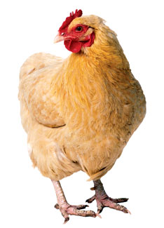

Even if your poultry roam free for a natural diet of pasture and bugs, you need a little feed to round out the menu. Hubbard Feeds recently announced a new product line, Homestead Poultry Feeds, which contains no antibiotics and no animal proteins. The lineup consists of six products: chick starter, grower for meat birds (chickens and turkeys), a ration for egg layers, duck and goose feed, turkey starter and a concentrate for mixing with your own grains to produce a balanced feed. In addition to grains, vitamins and minerals, the feeds contain Opti-Remedy, a blend of essential oils (oregano, thyme, cinnamon, capsicum and fruit extract) and organic selenium to boost immunity and maintain health.
Chickens raised for meat can eat the grower ration, FastGrow, until they’re butchered. FastGrow also can be used for starting heavy-breed egg layer chicks. You can find ingredient lists and feeding directions for each product here. The Web site provides a recipe for mixing the concentrate, Chick-En-Egg, with corn for use as a starter, grower, developer or layer ration for chickens. But if you raise grain other than corn, Hubbard will formulate a mix that works for you. You can find a dealer here, or your local feed store can contact Hubbard to get information on selling the feed.
|
 ARTVILLE LLC Homestead Poultry Feeds are now available. |
|
|